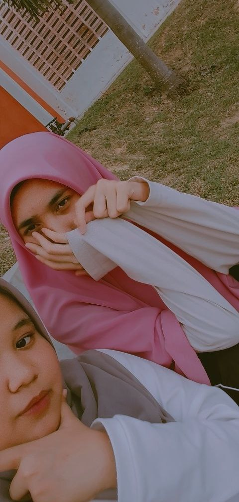
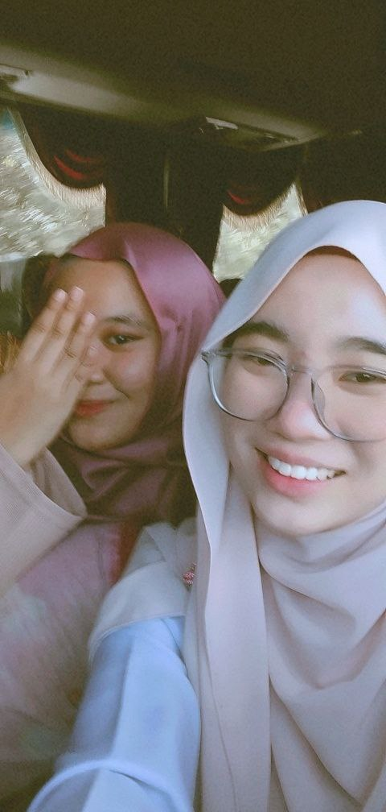

Hi, it's me Ayu Ariesya
Let's get to know more about me through this page !
NAME: NUR AYU ARIESYA BINTI RAMLAN
AGE: 20 YEARS OLD
BORN: HOSPITAL BESAR MELAKA
BORN DATE: 19 JUNE 2003
HOMETOWN: DURIAN TUNGGAL, MELAKA
HOBBY: I LOVE TO READ A NOVEL AND WATCHING K-DRAMA
"Family is indeed a precious gift bestowed upon us by the Almighty, a source of immense blessings, love, and unwavering support. In the Quran, Allah beautifully reminds us of the significance of family, stating, 'And among His Signs is that He created for you mates from among yourselves, that you may dwell in tranquility with them, and He has put love and mercy between your (hearts).' (Quran 30:21)
Alhamdulillah, I am blessed to introduce my cherished family, nurtured by the love and mercy inspired by this profound verse. Our home is filled with the warmth of companionship, the harmony of hearts, and the tranquility that stems from our unbreakable bond.
In the heart of our family, my beloved parents, Mr. and Mrs. Ramlan, embody the essence of love and sacrifice. Their unwavering guidance, selflessness, and unwavering support have shaped my character and taught me the values of compassion, resilience, and gratitude.
Standing by my side, my siblings, each a unique and treasured soul, add vibrant colors to our family tapestry. We share not only blood but also an unbreakable connection built on shared experiences, laughter, and mutual support. Together, we navigate the journey of life, celebrating achievements, offering a shoulder to lean on during challenges, and cherishing the moments of togetherness that weave our memories into a beautiful tapestry.
In the embrace of our family, we find solace, strength, and a sanctuary of love. Our hearts are intertwined with a love that transcends words, and our actions reflect the divine teachings of compassion, forgiveness, and kindness towards one another and the wider community.
As we walk through life guided by the light of the Quran, we strive to emulate the harmonious and compassionate relationships described within its verses. We hold steadfast to the belief that our family is not merely a worldly bond, but a connection blessed by Allah, a means to attain tranquility, and a source of support on our journey towards Him.
Indeed, our family's unity and love serve as a testament to the beauty and wisdom of the Quranic verse that reminds us of the sacred gift of companionship. With hearts intertwined in love and mercy, we cherish the blessing of family, seeking to strengthen our bonds and leave a legacy of love, compassion, and righteousness for generations to come."
NUR AFIQAH BINTI WAHID

Afiqah, my cherished friend and confidante, is a radiant soul whose presence illuminates my life. Nur Afiqah Binti Wahid, a name that embodies her inner beauty and grace, is an embodiment of kindness, empathy, and unwavering support. Afiqah's genuine care for others knows no bounds, and she consistently goes above and beyond to make a positive difference in the lives of those around her.
One of the most captivating aspects of Afiqah's character is her ability to make people feel seen, heard, and genuinely valued. She possesses an innate sense of empathy that allows her to truly understand the joys and sorrows of others. Afiqah's compassionate heart acts as a refuge, offering solace and understanding to those who seek her guidance. Her words of wisdom and genuine concern have provided me with comfort and guidance during the most challenging times, reminding me that I am never alone.
Afiqah's infectious laughter and joyful spirit are a testament to her unwavering optimism and zest for life. She has an uncanny ability to find the silver lining in any situation and infuses positivity into every interaction. Being around Afiqah uplifts my spirits and reminds me to approach life with a smile, no matter the circumstances.
In the realm of friendship, Afiqah's loyalty and unwavering support are unparalleled. She is a steadfast pillar, always there to celebrate my successes, offer a helping hand, and provide encouragement when I stumble. Afiqah's unwavering belief in my abilities and her genuine desire to see me succeed have propelled me forward on my journey, instilling in me a renewed sense of confidence and determination.
Beyond her inherent kindness and unwavering support, Afiqah is a wellspring of inspiration. Her passion for life and continuous pursuit of personal growth motivate me to push beyond my comfort zone and embrace new challenges. Afiqah's enthusiasm is contagious, and she has a unique ability to ignite a fire within those around her, encouraging us to chase our dreams and embrace our true potential.
Nur Afiqah Binti Wahid, or simply Afiqah, is not only a dear friend but a guiding light in my life. Her presence enriches my journey, reminding me of the immense value of genuine friendship. I am forever grateful for Afiqah's unwavering support, empathy, and love, and I am truly blessed to have her by my side as we navigate the highs and lows of life together.
RAUDHA BINTI NORHISAMMUDIN

Raudha Binti Norhisammudin, a dear friend of mine, is a true gem in my life. Her name, Raudha, resonates with her grace and elegance, reflecting the beauty that emanates from within her. Raudha possesses a rare combination of intelligence, kindness, and a captivating spirit. Her sharp intellect and curiosity make her an engaging conversationalist, while her empathetic nature enables her to understand and connect with people on a deep level.
One of the most admirable qualities of Raudha is her unwavering determination and drive. She sets her sights on her goals and fearlessly pursues them with passion and dedication. Raudha's resilience in the face of challenges inspires me to persevere and never give up on my own aspirations. Her ability to find creative solutions and think outside the box is truly remarkable.
In addition to her intellect, Raudha has a heart overflowing with compassion and kindness. She possesses an innate ability to make those around her feel valued and appreciated. Raudha's genuine concern for others and her willingness to extend a helping hand without hesitation are testaments to her selflessness. She brightens the lives of those she encounters through her acts of kindness and her ability to listen without judgment.
Raudha's radiant spirit and zest for life are infectious. Her adventurous nature and willingness to explore new horizons inspire me to step out of my comfort zone and embrace new experiences. Whether it's embarking on spontaneous adventures or pursuing her passions, Raudha embraces life with an enthusiasm that is truly contagious.
In the realm of friendship, Raudha's loyalty and unwavering support are unwavering. She is a steadfast friend, always there to lend a listening ear, offer guidance, and celebrate both the big and small victories in life. Raudha's unwavering belief in me and her ability to provide insightful perspectives have been invaluable in my personal growth and development.
Raudha Binti Norhisammudin is not just a friend; she is a shining star in my life. Her intellect, kindness, and adventurous spirit make her an extraordinary individual. I am grateful for the laughter, wisdom, and unforgettable moments we share. Raudha's presence adds depth and richness to my life, and I am blessed to call her my friend.